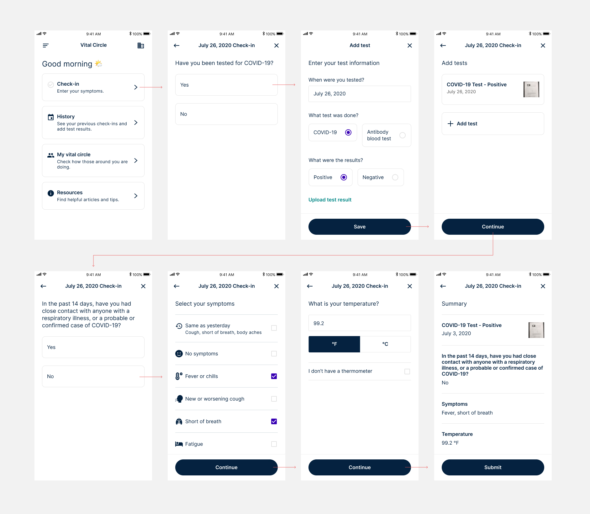
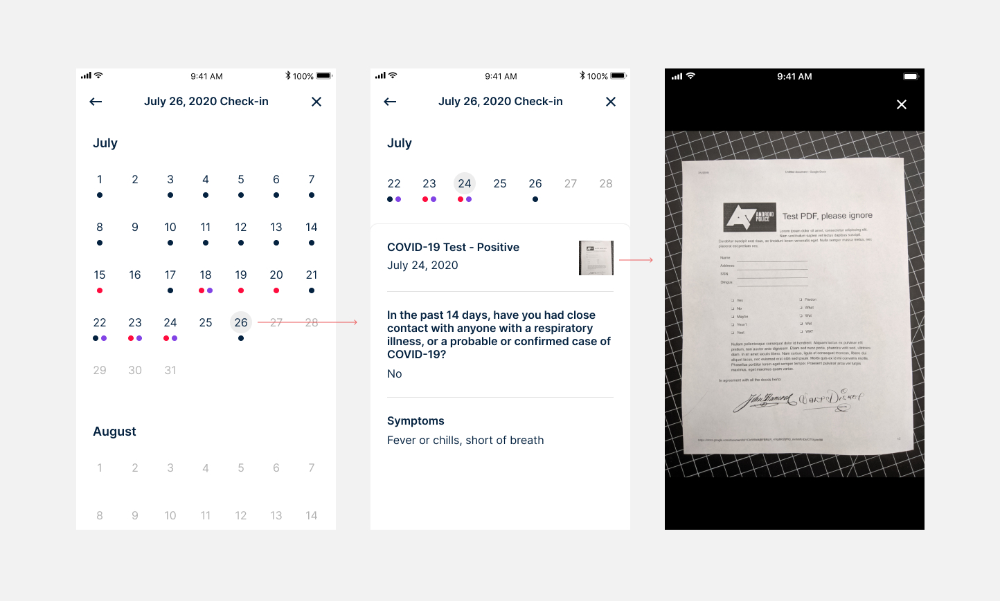
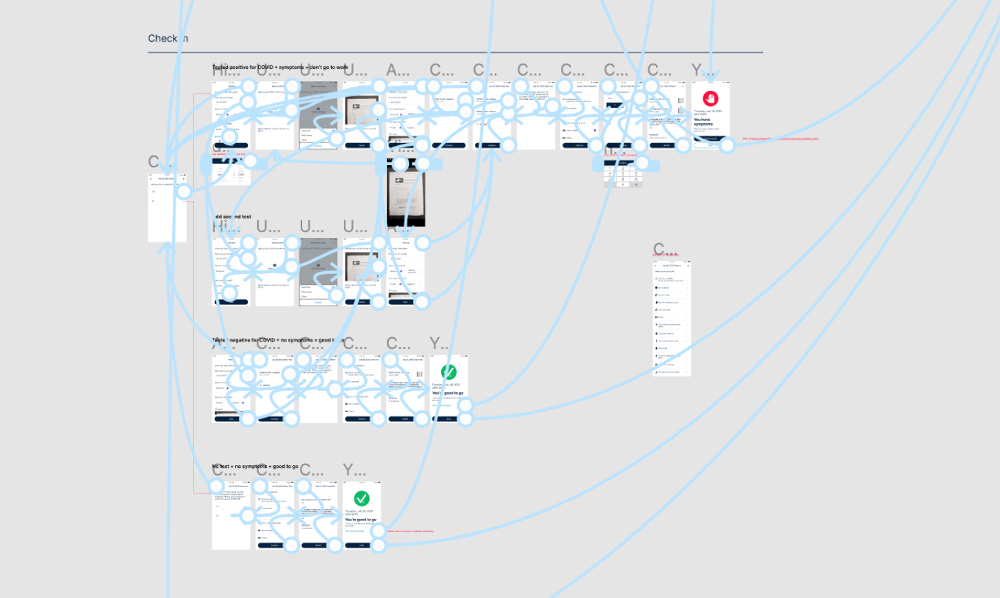

In March 2020, an opportunity came my way: "Looking for a designer who can use Figma." Pretty vague...but as quarantine had already started, I had an excess amount of time. As I learned more about the project, I began to be more interested. During this time of uncertainty and fear, I wanted to find a way to help others through the skills I had. I felt so privileged to have a home, a steady income, and family around me. I wanted to give back and this was what came my way: volunteering on a COVID-19 symptom tracking app called Vital Circle. The goal was to help employers and schools track symptoms across their organization.


